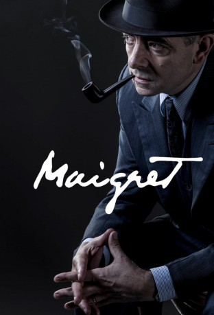

#5306 Kommissar Maigret: Ein toter Mann
Alternativ: Maigret's Dead Man
 
 IMDB-Wertung: 7.3 / 10
IMDB-Wertung: 7.3 / 10  Metascore: 0
Metascore: 0 
Auf einem Bauernhof in der nordfranzösischen Provinz Picardie macht die Polizei einen grausigen Fund: Die Familie wurde bestialisch umgebracht und ausgeraubt – der jüngste Fall in einer Serie von brutalen Raubmorden. Zur gleichen Zeit geht in Paris bei Kommissar Maigret ein anonymer Notruf ein. Ein Mann ist panisch vor Angst und behauptet, dass ihn Mörder verfolgen. Bevor Maigret mehr in Erfahrung bringen kann, legt der Unbekannte jedoch auf. Noch in derselben Nacht wird der Anrufer tatsächlich erstochen. Auf einem kleinen Platz findet die Polizei seine Leiche, die bis zur Unkenntlichkeit entstellt ist und laut Augenzeugen aus einem Auto geworfen wurde. Für Maigrets Vorgesetzten ist die Sache klar: Er vermutet einen Bandenkrieg unter Verbrechern und möchte wenig Arbeit in die Aufklärung stecken. Dem Kommissar aber geht der Fall unter die Haut. Schließlich findet er heraus, wer der Ermordete war und dass dieser mit seiner Frau ein Bistro betrieb.
Jahr: 2016
Dauer: 88 Minuten
FSK: 12
Land: England Studio: PolybandTonspuren: DTS - ,
Untertitel:
Auflösung: 1080p (1920x1080) Größe: 4567 MB
Genre: Drama, Krimi, Mystery
Regisseur: Jon East
Drehbuch: William Kennedy
Soundtrack:
Darsteller:
- Ian Puleston-Davies als Inspector Colombani
 Iván Fenyö als Pietr
Iván Fenyö als Pietr Rowan Atkinson als Chief Inspector Jules Maigret
Rowan Atkinson als Chief Inspector Jules Maigret Shaun Dingwall als Inspector Janvier
Shaun Dingwall als Inspector Janvier- Leo Staar als Inspector LaPointe
 Peter Schueller als Reveller - Jean Paul
Peter Schueller als Reveller - Jean Paul Mark Heap als Dr. Moers
Mark Heap als Dr. Moers- Aidan McArdle als Judge Comeliau
 Lucy Cohu als Madame Maigret
Lucy Cohu als Madame Maigret- John Light als Dacourt
 Anamaria Marinca als Maria
Anamaria Marinca als Maria- Amber Anderson als Francine
- Katia Bokor als Nurse
- András Korcsmáros als Detective , uncredited
- Dorottya Hair als Nicole
- Mark Hadfield als Albert Rochain
- Dénes Bernáth als Victor Poliensky
- Grant Stimpson als Barman
 Karen Gagnon als Police Telephonist
Karen Gagnon als Police Telephonist- Hugh Simon als Dr. Paul
 Matt Devere als Detective
Matt Devere als Detective- Russel Dean als Post Office Clerk
- Oengus MacNamara als Bookmaker
 Ann Queensberry als Claire Fontaine
Ann Queensberry als Claire Fontaine- Michael Fitzgerald als Hotel Proprietor - Piedboeuf
- Gabriella Fon als Adele
- Ross Waiton als Bargee
- Ralph Berkin als Landlord
- Livia Habermann als Midwife
- Tim Chipping als Boxer Joe
- Nathalie Armin als Nina
- Philip Starnier als Franz Lehel , uncredited
Datei: X:\4-Tetralogie(A-K)\Kommissar Maigret\Kommissar Maigret Ein toter Mann (2016, FSK12, 1920x1080).mkv seit 11.01.2017
Festplatte: HD Collection-3(N-Z)-6(A-Z)
 Es gibt insgesamt 7 Filme in der Gruppe '4-Tetralogie(A-K)\Kommissar Maigret'
Es gibt insgesamt 7 Filme in der Gruppe '4-Tetralogie(A-K)\Kommissar Maigret'